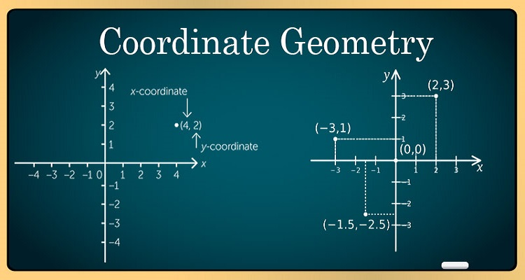

Coordinate Geometry

Coordinate Geometry is considered to be one of the most interesting concepts of mathematics. Coordinate Geometry (or the analytic geometry) describes the link between geometry and algebra through graphs involving curves and lines. It provides geometric aspects in Algebra and enables to solve geometric problems. It is a part of geometry where the position of points on the plane is described using an ordered pair of numbers. Here, the concepts of coordinate geometry (also known as Cartesian geometry) are explained along with its formulas and their derivations.